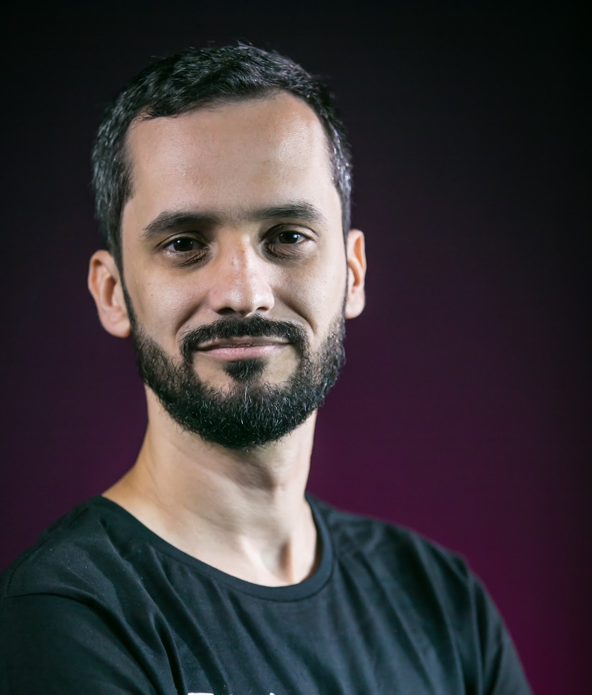

Você pode me adicionar ao LinkedIn, me seguir no Twitter ou ver as minhas fotos de família no Instagram.
Eu me interesso por (e às vezes produzo conteúdo sobre) product management, liderança, estratégia, cultura e pessoas.
Também curto filosofia e literatura, mas não me aventuro a escrever sobre.
No meu perfil do Medium você encontra vários. Destaque para alguns:
Também tenho alguns artigos publicados no blog da PM3. Destaque para:

Raphael Farinazzo é um executivo de Gestão de Produtos com mais de 15 anos de experiência em tecnologia e negócios, em empresas como RD Station, Involves, Xerpay/Betterfly e Unico IDtech.
Como membro ativo da comunidade de produto, Farina foi um dos organizadores do Product Camp por 4 anos e é um dos instrutores mais bem avaliados da PM3. Também atua como board member, investidor anjo e advisor para startups.
Raphael Farinazzo is a Product Management Executive with 15+ years of experience in technology and business, in companies such as RD Station, Involves, Xerpay/Betterfly, and unico IDtech.
An active member of the product community, Farina was one of the organizers of Product Camp Brazil for 4 years and is one of the top rated instructors at PM3. Also serves as board member, angel investor, and advisor for startups.